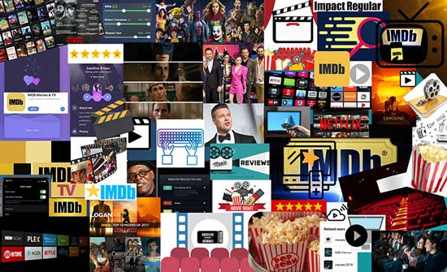
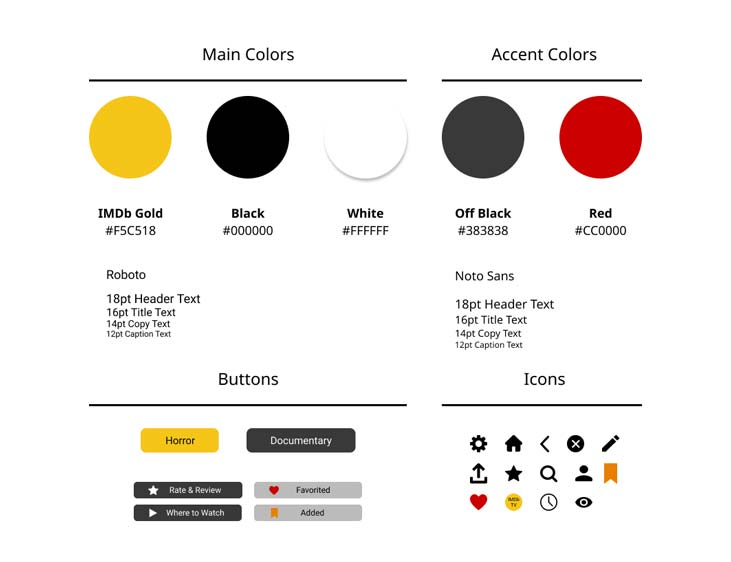
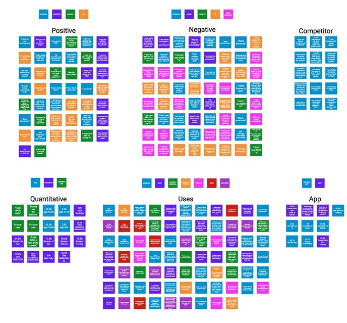
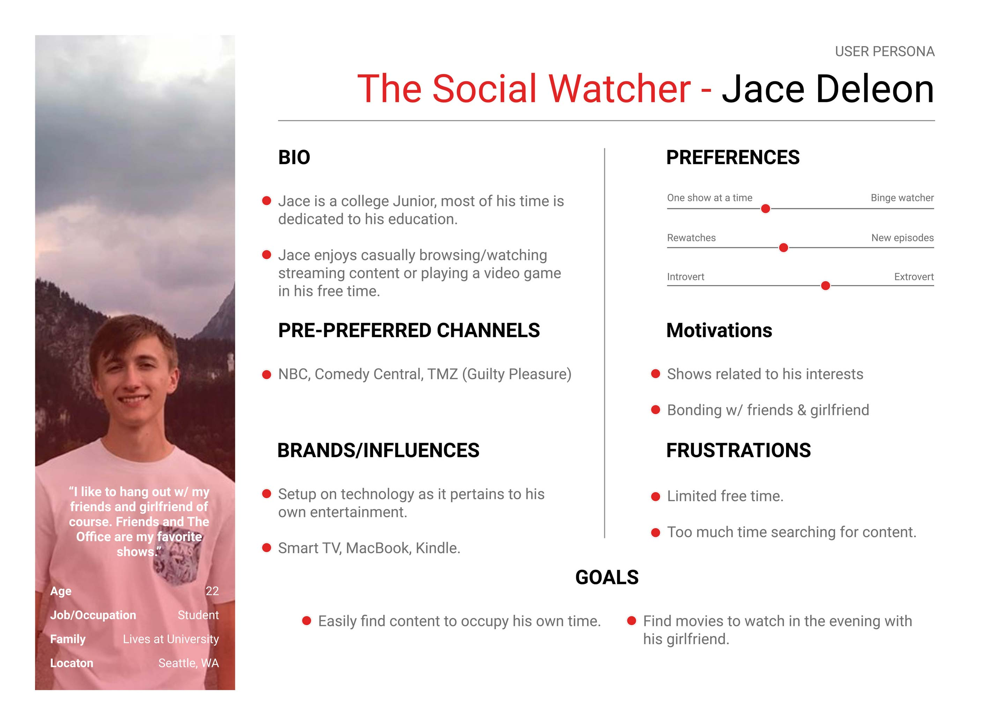
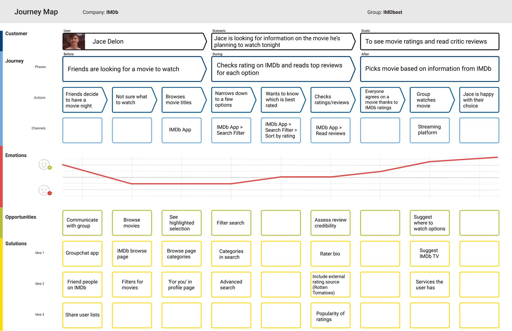

Mood Board

This board demonstrates visual inspiration for the redesign
Style Guide

This style guide is a collection of colors, icons, and fonts used for the redesign
Affinity Map

This group brainstorming process allowed us to take user feedback and organize it into redesign ideas
Persona

This persona is an example of a common IDMb user
Journey Map

This map is an example of the emotional journey a user takes while interacting with IMDb's app